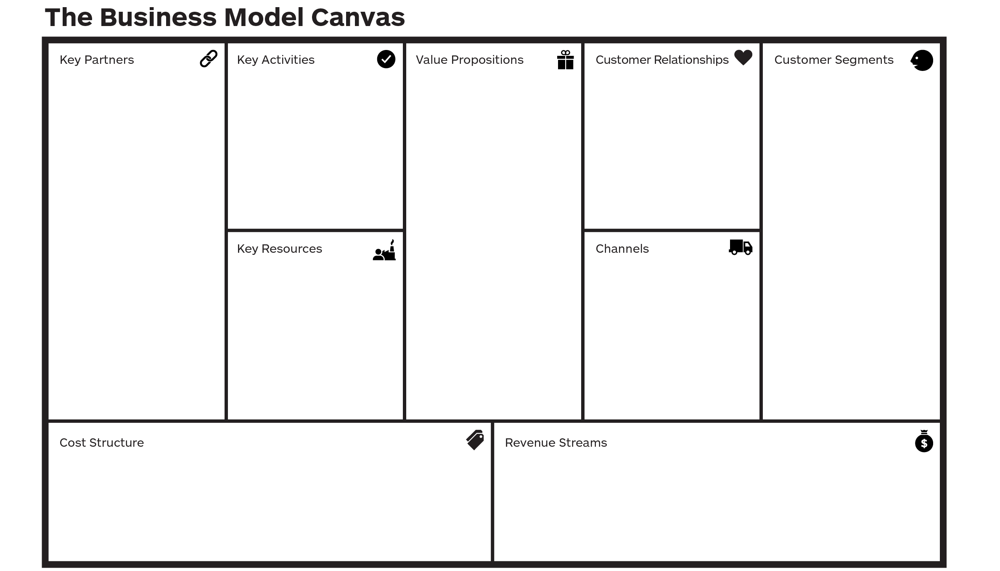

<mat-tab-group color=primary>
    <mat-tab label="Canvas 1"></mat-tab>
    <mat-tab label="Canvas 2"></mat-tab>
    <mat-tab label="Canvas 3"></mat-tab>
    <mat-tab>
        <ng-template mat-tab-label>
            <mat-icon matTooltip="New canvas." color="accent">add_circle_outline</mat-icon>
        </ng-template>
    </mat-tab>
</mat-tab-group>

<div id="canvas-controls">
    <button mat-icon-button color="warn" class="canvas-control">
        <mat-icon matTooltip="Delete this canvas.">delete_outlined
        </mat-icon>
    </button>
    <button mat-icon-button color="primary" class="canvas-control">
        <mat-icon matTooltip="Copy the contents of another business canvas to this one.">copy_all</mat-icon>
    </button>
    <button mat-icon-button color="accent" class="canvas-control">
        <mat-icon matTooltip="Create a new canvas-item.">add</mat-icon>
    </button>
</div>

<div class="centre-v">
    <p>Key Trends</p>
    <div class="y-label rot-acw-90">Industry Forces</div>
    
    <div class="y-label rot-cw-90">Market Forces</div>
    <br><br>
    <p>Macro-economic Forces</p>
</div>